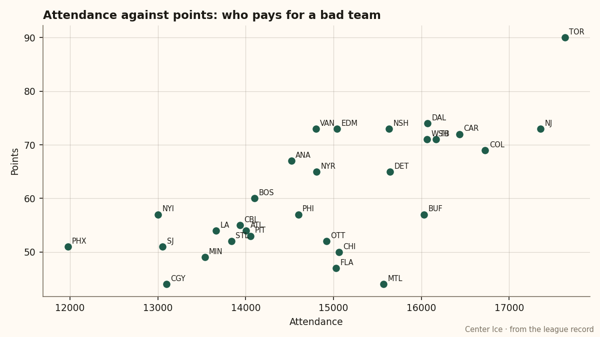

FLA
FLAThe Gate: Sunrise pays $79 to watch a club lose 19 of 28 at home
Florida draws 15,029 with a .321 home record and the league's fourth-worst building. Boris Van Ryswyk says patience has a shelf life.
 Ruth HalloranBusiness of hockey · The Building
Ruth HalloranBusiness of hockey · The Building
Florida draws 15,029 a night at $79 a ticket while going 9 and 19 on its own ice. No club in the league with a home record below .400 brings in more people.
The building says why the wins are hard to get. Florida's live sum sits at −18, tied for fourth worst with  Mighty Ducks of Anaheim,
Mighty Ducks of Anaheim,  Columbus Blue Jackets,
Columbus Blue Jackets,  Minnesota Wild and
Minnesota Wild and  St. Louis Blues. Equipment room at 0, workout room at 0, practice rink at 0. The travel budget at 3 is the only line item Boris Van Ryswyk has put money against, and it still carries a −1 modifier. The locker room reads 4, third highest in the league, and moves nothing in this build. The scouts room reads 1 and moves nothing a man outside the club can see.
St. Louis Blues. Equipment room at 0, workout room at 0, practice rink at 0. The travel budget at 3 is the only line item Boris Van Ryswyk has put money against, and it still carries a −1 modifier. The locker room reads 4, third highest in the league, and moves nothing in this build. The scouts room reads 1 and moves nothing a man outside the club can see.
On the ice, Florida's players average −3.53 on the facilities rating, 4th worst across thirty clubs. Mighty Ducks of Anaheim carries the same live sum of −18 and sits at 67 points. The building is a weight, not a verdict. But it is a weight that costs every man a fraction of his rating on every shift, and Florida has carried it through a 47-point season.

The scatter shows the league's attendance against its standings. Most clubs on the right of the plot win; the clubs at the bottom draw less. Florida is the counterexample the shape does not predict: 15,029 at 47 points.  Montreal Canadiens draws 15,569 on 44 points.
Montreal Canadiens draws 15,569 on 44 points.  Chicago Blackhawks draws 15,064 on 50. But those are clubs with more wins at home than Florida. The gate holds here for reasons the tuning table does not capture.
Chicago Blackhawks draws 15,064 on 50. But those are clubs with more wins at home than Florida. The gate holds here for reasons the tuning table does not capture.
Van Ryswyk named them on The Tunnel this week: "Fifteen thousand people are buying a ticket at seventy-nine dollars and watching a team lose at home nine and eighteen. That bothers me more than the profit."
The profit, by the league's books, is $13.94M. Revenue reads $56.36M against a payroll of $51.07M. The per-point line sits at $1.09M, 10th worst in a 30-club league. Florida is spending more per point than  Edmonton Oilers ($0.50M) and
Edmonton Oilers ($0.50M) and  Vancouver Canucks ($0.48M), both of which are at 73 points with cheaper rosters and comparable facilities.
Vancouver Canucks ($0.48M), both of which are at 73 points with cheaper rosters and comparable facilities.
The deadline and the shelf life
What the calendar has as the trade deadline falls 35 days from now. Van Ryswyk sits 29th of 30 general managers on the prestige table at 322, level since the last edition. He told The Tunnel he is shopping: "We're looking at what we've got and asking what it's worth to somebody else, and what comes back. That's the season."
Florida's roster top to bottom carries eight players on expired contracts and one on two years. Olli Jokinen at $7.63M through five more seasons is the only piece nobody will let go cheaply. Jay Bouwmeester, 78 overall on a one-year deal at $1.20M, is the question the deadline asks. If Florida is selling, Bouwmeester is the inventory.
The facilities gap widens the problem. A club that cannot develop its own men in practice, cannot condition them in a workout room that reads zero, cannot dress them in equipment the tuning file prices at −6, ends up buying what it cannot grow. Florida's payroll is $51.07M for 47 points.  New Jersey Devils spends $44.98M for 73 points from a live sum of −10. New Jersey runs a cheaper roster from a better building and is 26 points ahead.
New Jersey Devils spends $44.98M for 73 points from a live sum of −10. New Jersey runs a cheaper roster from a better building and is 26 points ahead.
Van Ryswyk on the building: "Equipment room, nothing. Workout room, nothing. Practice rink, nothing. Travel is the only line item we've put money against and it's not even where it should be. You can see it in the record."
He can also see the gate. Fifteen thousand at seventy-nine, in a building ranked 27th on the live sum, watching a team that wins less than one in three at home. The record says the market is patient. The question he posed on The Tunnel, and did not answer himself, is how many more forty-five-point seasons before they stay home.